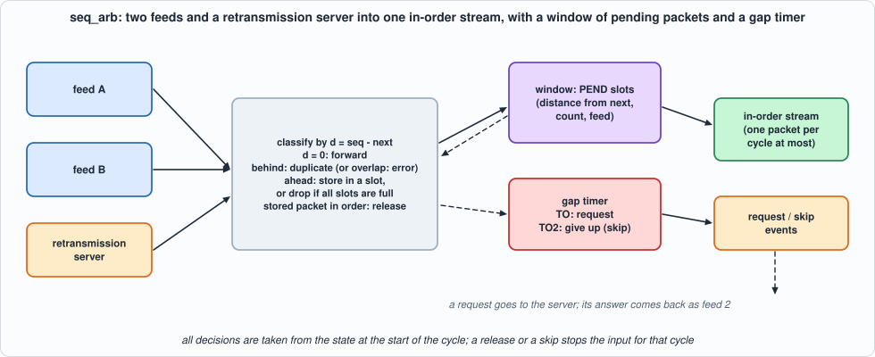
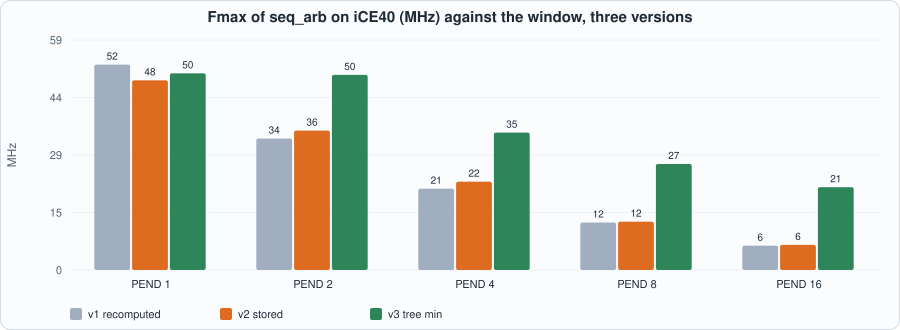
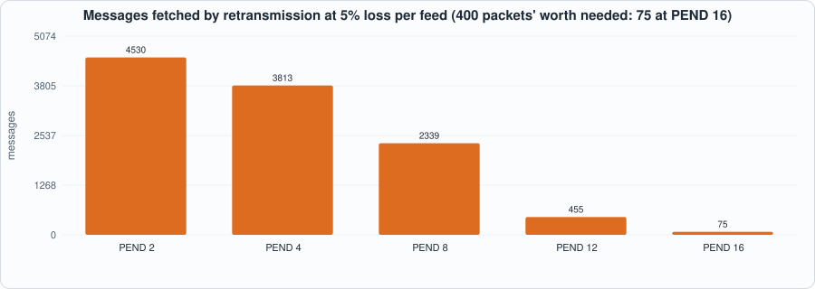
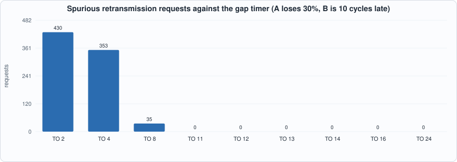

18. Sequence Gaps and A/B Feed Arbitration: Forwarding Once and in Order, Asking for What Is Missing, and a Window That Must Be Big Enough¶
About the kestrels in this picture
- Nankeen kestrel (Falco cenchroides) is found across Australia and nearby islands. It hovers over open country and grassland, and often hunts along roadsides and fields.
- Seychelles kestrel (Falco araeus) is found on the granitic islands of the Seychelles. It is a small kestrel that hunts lizards and insects in forest and around villages.
The scene is imaginary and the birds are stylised drawings.
What you will see: exchanges send every market-data packet twice (feeds A and B), over different paths, and number the messages so that a receiver can tell what is missing. The arbiter that sits behind the parsers of Chapters 16 and 17 must forward each packet once, in order, as soon as it has arrived on either feed, and when a packet has been lost on both it must ask for it again and, if the answer does not come, say so and go on. The chapter builds it at the level of the packet header (sequence number and message count), with a window of packets that arrived early, a gap timer, and a retransmission request; tests it as an end-to-end property (the messages forwarded tile the sequence space in order) in a closed loop with lossy feeds and a lossy retransmission server, and as a cycle-exact comparison of the RTL with a model; and measures the two things the design depends on: how large the window must be and how long the timer should wait. The first version missed the clock badly (6 MHz with 16 slots on iCE40); two rebuilds brought it to 21.
What you need to know first: Chapter 16 (the packet header: session, sequence number, count), Chapter 15 (a table in registers, a closed loop with a model) and Chapter 14 (an end-to-end property as a test, and why it is not enough alone).
What this chapter builds: rtl/seq_arb.sv (version 3; seq_arb_v1.sv and seq_arb_v2.sv are the first two), model/arb_gold.py (the specification, the closed loop, the stimulus), tb/arb_tb.sv, tools/ch18_run.py, tools/ch18_example_a.py, tools/ch18_example_b.py, tools/mut_ch18.py, tools/make_figs_ch18.py.
Scope: what this chapter leaves out, on purpose
Packet headers only: the arbiter decides what to forward; the packets' payloads travel beside it (a buffer, a handle) and are not modelled. Feeds A and B carry identical packets (same sequence number, same count, as the real feeds do), and a retransmission returns exactly the range asked for, as one packet; overlapping or differently cut packets, and a retransmission that overshoots a stored packet, are outside the contract (an overlap with the expected number is reported as an error, BAD, and not tested in the closed loop). One input per cycle from a merged port (a real design has a port per feed). 32-bit sequence numbers (Mold has 64) with modular comparison. A heartbeat is ignored: a heartbeat that announces a number ahead of the expected one would reveal a loss at the end of a stream, which this arbiter cannot see (measured below). The retransmission server is a model that answers after a fixed time; no real protocol (the exchange's request format, rate limits, a separate TCP or UDP session) is built.
The rules¶
model/arb_gold.py is the specification; its header is the rule book. State: next (the sequence number the output waits for), PEND slots for packets that arrived ahead of it, a gap timer tmr and a flag req. All decisions of a cycle are taken from the state at its start. In one cycle:
- a stored packet whose number equals
nextis released (the lowest such slot, at most one); a gap is a non-empty window with no release possible; its minimum distancemindis the smallestslot seq - next; - timer. In a gap, when no request has been sent and
tmr = TO: REQUEST[next, next + min(mind, 65535)); when a request has been sent andtmr = TO2: SKIP, report[next, next + mind)lost and movenextto the first stored packet; otherwisetmrcounts; outside a gap it is cleared; - stall = a release or a skip: the input is not accepted (
ready = 0); - otherwise the input
(feed, seq, cnt)is classified byd = seq - next: HB (a heartbeat,cnt = 0: no change); FWD (d = 0: forwarded,next += cnt); behindnext: DUP if it ends at or beforenext, else BAD; ahead: DUP if a slot has this number, STORE in the lowest free slot, or OVF (dropped: the window is full).
The outputs are registered: the decision for the input or the release (kind, number, count, feed), the timer event (REQ or SKIP, number, count), and the state after the cycle (next, slots in use).

Figure 18.1: two feeds and a retransmission server into one in-order stream.#!/usr/bin/env python3
"""Chapter 18: the specification of the sequencer and A/B arbiter, cycle for cycle, and the closed loop around it.
A PACKET is (feed, seq, cnt): the header of a MoldUDP64 packet (Chapters 16 and 17) seen at the packet level; feed 0 = A, 1 = B, 2 = retransmission. Feeds A and B carry IDENTICAL packet streams (same seq, same cnt); a retransmission returns exactly the range that was requested, as one packet. Sequence numbers are 32 bits here and every comparison is modular. A packet with cnt = 0 is a heartbeat.
State: next (the sequence number the output is waiting for), PEND slots of packets that arrived ahead of it (seq, cnt, feed), a gap timer (tmr) and req (a retransmission request has been sent for the present gap).
ONE cycle (all decisions are taken from the state at the START of the cycle):
rel = the slot with seq == next, if any (a stored packet is now in order);
gap = some slot is valid and there is no rel; mind = the smallest (slot seq - next);
timer: in a gap, when req = 0 and tmr = TO: REQUEST (seq = next, cnt = min(mind, 0xFFFF)), req := 1, tmr := 0; when req = 1 and tmr = TO2: SKIP (seq = next, cnt = mind), next := next + mind, req := 0, tmr := 0; otherwise tmr := tmr + 1. Outside a gap tmr := 0, req := 0.
stall = rel or SKIP: the input is not accepted (ready = 0). Else an input packet is classified by d = seq - next:
cnt = 0 HB heartbeat, no state change
d = 0 FWD forwarded in order, next := next + cnt
d behind (top bit set) DUP if the packet ends at or before next, else BAD (overlaps next: outside the contract, reported)
d ahead, a slot has this seq DUP
d ahead, a free slot STORE in the lowest free slot
d ahead, no free slot OVF dropped (the gap will be requested again when its turn comes)
rel: the packet is released (REL), next := next + cnt, the slot is freed.
Outputs, registered, seen the cycle after: a decision (kind, seq, cnt, feed) for the input or the release, and a timer event (REQ or SKIP); and the state after the cycle (next, number of slots in use).
Outside the contract (not tested): packets whose ranges overlap a stored one, or a retransmission that overshoots a stored packet."""
import random
M = 0xFFFFFFFF
FWD, STORE, DUP, BAD, OVF, HB, REL = range(7)
KN = ["FWD", "STORE", "DUP", "BAD", "OVF", "HB", "REL"]
REQ, SKIP = 1, 2
def behind(d): return (d >> 31) & 1
class Arb:
def __init__(self, init=1, pend=4, to=16, to2=64):
self.next = init & M; self.pend = pend; self.to = to; self.to2 = to2; self.slots = [None] * pend; self.tmr = 0; self.req = 0
def npend(self): return sum(1 for s in self.slots if s)
def _rel(self):
for i, s in enumerate(self.slots):
if s and s[0] == self.next: return i
return None
def _mind(self): return min(((s[0] - self.next) & M for s in self.slots if s), default=None)
def _timer(self):
rel = self._rel(); mind = self._mind(); gap = mind is not None and rel is None
if not gap: return None, 0, 0, (0, 0)
if not self.req and self.tmr == self.to: return REQ, self.next, min(mind, 0xFFFF), (0, 1)
if self.req and self.tmr == self.to2: return SKIP, self.next, mind, (0, 0)
return None, 0, 0, (self.tmr + 1, self.req)
def ready(self): return self._rel() is None and self._timer()[0] != SKIP
def step(self, pkt):
"""pkt = (feed, seq, cnt) or None -> (consumed, decision or None, timer event or None). The decision is (kind, seq, cnt, feed)."""
rel = self._rel(); tk, ts, tc, (ntmr, nreq) = self._timer(); gap = self._mind() is not None and rel is None
dec = None; t = (tk, ts, tc) if tk else None; consumed = False
if rel is not None:
s = self.slots[rel]; dec = (REL, s[0], s[1], s[2]); self.slots[rel] = None; self.next = (self.next + s[1]) & M
elif tk == SKIP: self.next = (self.next + tc) & M
elif pkt is not None:
consumed = True; f, q, c = pkt; d = (q - self.next) & M
if c == 0: dec = (HB, q, c, f)
elif d == 0: dec = (FWD, q, c, f); self.next = (self.next + c) & M
elif behind(d): e = (d + c) & M; dec = (DUP if (behind(e) or e == 0) else BAD, q, c, f)
elif any(s and s[0] == q for s in self.slots): dec = (DUP, q, c, f)
elif None in self.slots: self.slots[self.slots.index(None)] = (q, c, f); dec = (STORE, q, c, f)
else: dec = (OVF, q, c, f)
if gap: self.tmr, self.req = ntmr, nreq
else: self.tmr, self.req = 0, 0
return consumed, dec, t
# ---------------------------------------------------------------- the closed loop
def make_source(rng, n, init=1, hb=0.05, maxcnt=20):
"""The exchange: n packets in sequence order (with some heartbeats): [(seq, cnt)]."""
out = []; q = init & M
for _ in range(n):
if rng.random() < hb: out.append((q, 0)); continue
c = rng.randint(1, maxcnt); out.append((q, c)); q = (q + c) & M
return out
def arrivals(rng, src, loss_a=0.0, loss_b=0.0, dup=0.0, jitter=3, skew=0, spacing=4, rt_loss=0.0):
"""-> [(arrival cycle, feed, seq, cnt)] for feeds A and B: each packet i is sent at cycle spacing * i, delayed by 10 + skew (B only) + uniform(0, jitter) cycles, lost with the feed's probability, and delivered twice with probability dup (the copy a few cycles later)."""
out = []
for i, (q, c) in enumerate(src):
for feed, loss in ((0, loss_a), (1, loss_b)):
if rng.random() < loss: continue
t = spacing * i + 10 + (skew if feed else 0) + rng.randint(0, jitter); out.append((t, feed, q, c))
if rng.random() < dup: out.append((t + rng.randint(1, 6), feed, q, c))
return out
def run(arr, init=1, pend=4, to=16, to2=64, rt=30, rt_loss=0.0, seed=1, maxcycles=400000, record=True):
"""Closed loop: the inputs arrive in the order of their arrival cycle, one is OFFERED per cycle (the oldest not yet accepted); a REQ makes the retransmission server answer after `rt` cycles with ONE packet of exactly the requested range (lost with probability rt_loss). -> dict(rows, ...)"""
rng = random.Random(seed); a = Arb(init, pend, to, to2); queue = sorted(arr); qi = 0; pending = []; t = 0; rows = []; forwarded = []; reqs = []; skips = []; lines = []
prev = (None, None); last_t = max((x[0] for x in arr), default=0)
while t < maxcycles:
while qi < len(queue) and queue[qi][0] <= t: pending.append(queue[qi][1:]); qi += 1
offered = pending[0] if pending else None
r = a.ready(); nxt_before, np_before = a.next, a.npend(); cons, dec, tev = a.step(offered)
if cons: pending.pop(0)
if record: lines.append(offered)
rows.append((1 if r else 0, prev[0], prev[1], nxt_before, np_before))
if dec and dec[0] in (FWD, REL): forwarded.append((t, dec[1], dec[2], dec[3]))
if tev:
(reqs if tev[0] == REQ else skips).append((t, tev[1], tev[2]))
if tev[0] == REQ and rng.random() >= rt_loss: queue.append((t + rt, 2, tev[1], tev[2])); queue.sort(key=lambda x: x[0]) # the answer arrives after t, so the entries already consumed stay in front
prev = (dec, tev); t += 1
if t > last_t + 2000 + 3 * (to + to2) and not pending and a.npend() == 0 and a.tmr == 0: break
rows.append((1, prev[0], prev[1], a.next, a.npend()))
return dict(rows=rows, lines=lines, forwarded=forwarded, reqs=reqs, skips=skips, arb=a, cycles=t)
def check_stream(res, init=1):
"""The end-to-end property, at the level of MESSAGES: the ranges forwarded (FWD and REL, in the order of the forwarding) tile the sequence space from `init` without a gap or an overlap, except the ranges the arbiter SKIPPED (which it reported). -> None or a description. (A retransmission answers a whole gap with one packet, so the packets forwarded are not the source's packets. Where the stream STOPS is not checked: a packet dropped because the slots were full, with nothing after it to reveal the loss, is never asked for again: `tail` below measures it.)"""
cur = init & M; skips = {s_: n for _, s_, n in res["skips"]}
for t, q, c, f in res["forwarded"]:
while cur in skips and cur != q: cur = (cur + skips.pop(cur)) & M
if q != cur: return f"at cycle {t}: forwarded [{q}, +{c}) but the next message is {cur}"
cur = (cur + c) & M
return None
def tail(res, arr, init=1):
"""Messages that ARRIVED on A or B beyond the point where the forwarding stopped: -> (messages, first undelivered sequence number)."""
cur = init & M
for t, q, c, f in res["forwarded"]: cur = (q + c) & M
for _, s_, n in res["skips"]: pass
end = max(((q + c) & M for _, f, q, c in arr if c and f < 2), key=lambda x: (x - init) & M, default=cur)
return (end - res["arb"].next) & M, res["arb"].next
def write_stim(path, lines, seed=1):
"""One line per cycle: the packet offered (feed, seq, cnt) or junk with valid = 0."""
rng = random.Random(seed)
with open(path, "w") as f:
for p in lines:
if p: f.write("%013x\n" % ((1 << 50) | (p[0] << 48) | (p[1] << 16) | p[2]))
else: f.write("%013x\n" % ((rng.getrandbits(2) << 48) | (rng.getrandbits(32) << 16) | rng.getrandbits(16)))
return len(lines)
def expected_rows(res):
"""The rows the testbench prints, as tuples of ints (cycle, ready, dv, dk, ds, dc, df, tv, tk, ts, tc, next, np)."""
out = []
for c, (r, dec, tev, nx, np_) in enumerate(res["rows"][:-1]):
out.append((c, r, 1 if dec else 0, dec[0] if dec else 0, dec[1] if dec else 0, dec[2] if dec else 0, dec[3] if dec else 0, 1 if tev else 0, tev[0] if tev else 0, tev[1] if tev else 0, tev[2] if tev else 0, nx, np_))
return out
if __name__ == "__main__":
a = Arb(1, 4, 5, 9)
def step(p): return a.step(p)
c, d, t = step((0, 1, 3)); assert d[0] == FWD and a.next == 4 # in order
c, d, t = step((1, 1, 3)); assert d[0] == DUP # the B copy
c, d, t = step((0, 7, 2)); assert d[0] == STORE and a.npend() == 1 # ahead: a gap of 3
evs = [step(None)[2] for i in range(7)]
assert evs[5] == (REQ, 4, 3) and sum(1 for e in evs if e) == 1, evs # the gap lasts TO = 5 cycles, then the request for [4, 7)
c, d, t = step((2, 4, 3)); assert d[0] == FWD and a.next == 7 # the retransmission fills it
c, d, t = step(None); assert d[0] == REL and a.next == 9 and a.npend() == 0 # the stored packet is released
c, d, t = step((0, 20, 1)); assert d[0] == STORE
for i in range(5 + 9 + 2): c, d, t = step(None)
assert a.next in (20, 21) and a.npend() <= 1 # no answer: SKIP, then release
# the other classes: behind (DUP, BAD), heartbeat, full slots, a huge gap, a wrap, no input accepted while a release is possible
b = Arb(100, 2, 4, 6)
assert b.step((0, 50, 10))[1][0] == DUP and b.step((0, 95, 10))[1][0] == BAD and b.step((0, 100, 0))[1][0] == HB and b.step((0, 130, 0))[1][0] == HB and b.npend() == 0 # behind and ending before next; overlapping next; heartbeats
assert b.step((0, 110, 5))[1][0] == STORE and b.step((1, 110, 5))[1][0] == DUP and b.step((0, 120, 5))[1][0] == STORE and b.step((0, 130, 5))[1][0] == OVF and b.npend() == 2
big = Arb(1, 4, 2, 3); big.step((0, 70000, 3)); ev = [big.step(None)[2] for _ in range(4)]; assert ev[2] == (REQ, 1, 0xFFFF), ev # a gap of 69,999 is requested as 65,535
w = Arb(0xFFFFFFFE, 4, 99, 99); assert w.step((0, 0xFFFFFFFE, 3))[1][0] == FWD and w.next == 1 and w.step((0, 1, 2))[1][0] == FWD and w.step((1, 0xFFFFFFFE, 3))[1][0] == DUP # sequence numbers wrap
r = Arb(1, 4, 99, 99); r.step((0, 4, 2)); r.step(None); r.step((0, 1, 3)); assert r.next == 4 and r.ready() is False and r.step((0, 9, 1))[0] is False and r.next == 6 # a release is possible: the input waits one cycle
print("arb_gold hand-checked scenarios passed")
The hardware¶
The first version is the rules written down as logic: for every slot, seq - next is recomputed in every cycle, compared with zero (is it in order?), compared with the other slots (which is the minimum?), and next is advanced by a count that is selected from the release, the skip or the input. The chapter shows the three versions because the first one did not work well enough, and what it measured.
// verilator lint_off DECLFILENAME
// VERSION 3 (rtl/seq_arb_v1.sv and seq_arb_v2.sv are the first two; the chapter shows what each measured). Version 3 takes the minimum distance with a TREE of comparators (depth log2 PEND) instead of a chain (depth PEND). Version 2: each stored packet keeps its DISTANCE from the expected number, sd = seq - nx, and every advance of nx by delta subtracts delta from all the distances, so that 'in order' is a test for zero on a register and the minimum is taken over registers; the first version recomputed seq - nx for every slot from nx in every cycle.
// Chapter 18: the sequencer and A/B arbiter at the packet level. Behaviour, rules and every simplification are those of model/arb_gold.py, cycle for cycle.
// One packet header per cycle (feed 0 = A, 1 = B, 2 = retransmission; 32-bit sequence number; 16-bit count; count 0 is a heartbeat). The arbiter forwards each packet once, in order: a packet that arrives AHEAD of the expected sequence number is kept in one of PEND slots until it is in order (then released, one per cycle, with priority over the input), a copy of one already forwarded or kept is dropped, and a GAP that lasts TO cycles is requested (REQ: sequence number and count of the missing range); a request not answered within TO2 more cycles is given up (SKIP: the range is reported lost and the arbiter moves on). While a release or a SKIP happens in_ready is 0.
// Outputs are registered (seen the cycle after): d_* the decision for the input or the release (kind 0 FWD, 1 STORE, 2 DUP, 3 BAD, 4 OVF, 5 HB, 6 REL), t_* the timer event (1 REQ, 2 SKIP); o_next and o_np (slots in use) are the state.
module seq_arb #(parameter int PEND = 4, parameter int TO = 16, parameter int TO2 = 64, parameter logic [31:0] INIT = 32'd1) (
input logic clk, input logic rst,
input logic in_valid, input logic [1:0] in_feed, input logic [31:0] in_seq, input logic [15:0] in_cnt, output logic in_ready,
output logic d_valid, output logic [2:0] d_kind, output logic [31:0] d_seq, output logic [15:0] d_cnt, output logic [1:0] d_feed,
output logic t_valid, output logic [1:0] t_kind, output logic [31:0] t_seq, output logic [31:0] t_cnt,
output logic [31:0] o_next, output logic [3:0] o_np);
localparam int IW = (PEND > 1) ? $clog2(PEND) : 1;
localparam int NP = 1 << IW;
logic [31:0] mv [NP];
logic sv [PEND]; logic [31:0] sd [PEND]; logic [15:0] sc [PEND]; logic [1:0] sf [PEND];
logic [31:0] nx; logic [15:0] tmr; logic req;
logic [31:0] delta;
logic rel_any, has_pend, gap, req_fire, skip_fire, accept, same, free_any, dz, bh, dup_beh, cnt0; logic [IW-1:0] rel_idx, free_idx; logic [31:0] mind, d, e, di; logic [3:0] np;
always_comb begin
d = in_seq - nx; rel_any = 1'b0; rel_idx = '0; has_pend = 1'b0; mind = 32'hffffffff; same = 1'b0; free_any = 1'b0; free_idx = '0; np = 4'd0;
for (int i = PEND - 1; i >= 0; i--) begin
di = sd[i];
if (sv[i]) begin has_pend = 1'b1; np = np + 4'd1; if (di == 32'd0) begin rel_any = 1'b1; rel_idx = IW'(i); end if (sd[i] == d) same = 1'b1; end
else begin free_any = 1'b1; free_idx = IW'(i); end
end
for (int i = 0; i < NP; i++) mv[i] = (i < PEND) ? (sv[i % PEND] ? sd[i % PEND] : 32'hffffffff) : 32'hffffffff;
for (int sdp = 1; sdp < NP; sdp *= 2) for (int i = 0; i < NP; i += 2 * sdp) if (mv[i + sdp] < mv[i]) mv[i] = mv[i + sdp];
mind = mv[0];
gap = has_pend && !rel_any;
req_fire = gap && !req && (tmr == 16'(TO)); skip_fire = gap && req && (tmr == 16'(TO2));
in_ready = !rel_any && !skip_fire; accept = in_valid && in_ready;
e = d + {16'd0, in_cnt}; cnt0 = (in_cnt == 16'd0); dz = (d == 32'd0); bh = d[31]; dup_beh = e[31] || (e == 32'd0);
delta = rel_any ? {16'd0, sc[rel_idx]} : skip_fire ? mind : (accept && dz) ? {16'd0, in_cnt} : 32'd0;
o_next = nx; o_np = np;
end
always_ff @(posedge clk) begin
d_valid <= 1'b0; t_valid <= 1'b0;
if (rst) begin
nx <= INIT; tmr <= 16'd0; req <= 1'b0; for (int i = 0; i < PEND; i++) sv[i] <= 1'b0;
end else begin
nx <= nx + delta;
if (!gap) begin tmr <= 16'd0; req <= 1'b0; end
else if (req_fire) begin tmr <= 16'd0; req <= 1'b1; end
else if (skip_fire) tmr <= 16'd0; // req stays set for the one cycle until the release clears it (after a skip the expected number IS a stored packet's, so the next cycle is not a gap)
else tmr <= tmr + 16'd1;
for (int i = 0; i < PEND; i++) if (sv[i]) sd[i] <= sd[i] - delta;
if (req_fire) begin t_valid <= 1'b1; t_kind <= 2'd1; t_seq <= nx; t_cnt <= (mind > 32'hffff) ? 32'hffff : mind; end
if (skip_fire) begin t_valid <= 1'b1; t_kind <= 2'd2; t_seq <= nx; t_cnt <= mind; end
if (rel_any) begin
d_valid <= 1'b1; d_kind <= 3'd6; d_seq <= nx; d_cnt <= sc[rel_idx]; d_feed <= sf[rel_idx]; sv[rel_idx] <= 1'b0;
end else if (accept) begin
d_valid <= 1'b1; d_seq <= in_seq; d_cnt <= in_cnt; d_feed <= in_feed;
if (cnt0) d_kind <= 3'd5;
else if (dz) d_kind <= 3'd0;
else if (bh) d_kind <= dup_beh ? 3'd2 : 3'd3;
else if (same) d_kind <= 3'd2;
else if (free_any) begin d_kind <= 3'd1; sv[free_idx] <= 1'b1; sd[free_idx] <= d; sc[free_idx] <= in_cnt; sf[free_idx] <= in_feed; end
else d_kind <= 3'd4;
end
end
end
endmodule
// seq_arb_syn: the same design behind a handful of pins, ONLY so that it fits a chip for the place-and-route runs: the 50-bit input is shifted in serially, the outputs are folded into one registered 16-bit word.
module seq_arb_syn #(parameter int PEND = 4, parameter int TO = 16, parameter int TO2 = 64) (input logic clk, input logic rst, input logic si, input logic sh, output logic [15:0] info);
logic [50:0] iv; logic ready, dv, tv; logic [2:0] dk; logic [31:0] ds, ts, tc, nx; logic [15:0] dc; logic [1:0] df, tk; logic [3:0] np;
always_ff @(posedge clk) if (sh) iv <= {iv[49:0], si};
seq_arb #(.PEND(PEND), .TO(TO), .TO2(TO2)) u (.clk(clk), .rst(rst), .in_valid(iv[50]), .in_feed(iv[49:48]), .in_seq(iv[47:16]), .in_cnt(iv[15:0]), .in_ready(ready), .d_valid(dv), .d_kind(dk), .d_seq(ds), .d_cnt(dc), .d_feed(df), .t_valid(tv), .t_kind(tk), .t_seq(ts), .t_cnt(tc), .o_next(nx), .o_np(np));
logic [15:0] x; always_comb x = ds[15:0] ^ ds[31:16] ^ dc ^ ts[15:0] ^ ts[31:16] ^ tc[15:0] ^ tc[31:16] ^ nx[15:0] ^ nx[31:16] ^ {dv, tv, ready, dk, tk, df, np, 2'd0};
always_ff @(posedge clk) info <= x;
endmodule
(This is version 3; Example A shows what versions 1 and 2 were and what each measured.)
The tests¶
// Chapter 18 testbench for seq_arb: line k of out/arb_stim.hex is the input OFFERED in cycle k: valid(bit 50) feed(49:48) seq(47:16) cnt(15:0), 13 hex digits (junk where valid = 0). The packet is held on the pins whether or not the design is ready: model/arb_gold.py run() decides which cycle's offer is accepted. Before every clock edge it prints one line
// C <cycle> <in_ready> <d_valid> <d_kind> <d_seq> <d_cnt> <d_feed> <t_valid> <t_kind> <t_seq> <t_cnt> <next> <slots in use>
// where the d_ and t_ fields are those registered at the previous edge (zero when not valid) and next / slots are the state before this cycle.
`timescale 1ns/1ps
`ifndef NC
`define NC 1000
`endif
`ifndef PEND
`define PEND 4
`endif
`ifndef TO
`define TO 16
`endif
`ifndef TO2
`define TO2 64
`endif
`ifndef INIT
`define INIT 1
`endif
module arb_tb;
localparam int NC = `NC;
logic clk = 0, rst = 1, in_valid = 0; logic [1:0] in_feed = '0; logic [31:0] in_seq = '0; logic [15:0] in_cnt = '0; logic [51:0] vec [0:NC-1]; int k, cyc = 0; logic run = 0;
logic in_ready, d_valid, t_valid; logic [2:0] d_kind; logic [31:0] d_seq, t_seq, t_cnt, o_next; logic [15:0] d_cnt; logic [1:0] d_feed, t_kind; logic [3:0] o_np;
seq_arb #(.PEND(`PEND), .TO(`TO), .TO2(`TO2), .INIT(32'(`INIT))) dut (.clk(clk), .rst(rst), .in_valid(in_valid), .in_feed(in_feed), .in_seq(in_seq), .in_cnt(in_cnt), .in_ready(in_ready), .d_valid(d_valid), .d_kind(d_kind), .d_seq(d_seq), .d_cnt(d_cnt), .d_feed(d_feed),
.t_valid(t_valid), .t_kind(t_kind), .t_seq(t_seq), .t_cnt(t_cnt), .o_next(o_next), .o_np(o_np));
always #4 clk = ~clk;
`ifdef GARBAGE
initial begin for (int i = 0; i < `PEND; i++) begin dut.sv[i] = 1'b1; dut.sd[i] = 32'h12345678 + i; dut.sc[i] = 16'd9; dut.sf[i] = 2'd1; end dut.nx = 32'hdeadbeef; dut.tmr = 16'd3; dut.req = 1'b1; end // Icarus only: the registers power up with garbage, so that a reset that forgets one is seen
`endif
always @(posedge clk) if (run) begin
$display("C %0d %0d %0d %0d %0d %0d %0d %0d %0d %0d %0d %0d %0d", cyc, in_ready, d_valid, d_valid ? d_kind : 3'd0, d_valid ? d_seq : 32'd0, d_valid ? d_cnt : 16'd0, d_valid ? d_feed : 2'd0, t_valid, t_valid ? t_kind : 2'd0, t_valid ? t_seq : 32'd0, t_valid ? t_cnt : 32'd0, o_next, o_np);
cyc++;
end
initial begin
$readmemh("out/arb_stim.hex", vec);
repeat (3) @(negedge clk); rst = 0;
for (k = 0; k < NC; k++) begin
in_valid = vec[k][50]; in_feed = vec[k][49:48]; in_seq = vec[k][47:16]; in_cnt = vec[k][15:0]; run = 1; @(negedge clk);
end
in_valid = 0; repeat (3) @(negedge clk); $finish;
end
endmodule
#!/usr/bin/env python3
"""Chapter 18: the running designs. (1) lint; (2) the model: hand-checked scenarios and the END-TO-END PROPERTY in a closed loop with lossy, duplicating, reordering A and B feeds and a retransmission server (the messages forwarded tile the sequence space in order, every skipped range reported); (3) seq_arb against the cycle model, every output and the state after every cycle, in two simulators, for several sizes of window and timer and with the sequence numbers about to wrap, on closed-loop runs and on RANDOM inputs (which reach the cases the loop does not: overlaps, full slots)."""
import os, random, statistics as st, subprocess, sys
sys.path.insert(0, os.path.dirname(os.path.abspath(__file__))); sys.path.insert(0, os.path.join(os.path.dirname(os.path.abspath(__file__)), "..", "model"))
import flow, arb_gold as G
R = flow.ROOT; F = ["rtl/seq_arb.sv", "tb/arb_tb.sv"]
def rtl_rows(res, pend, to, to2, init, simu="icarus", rtl=F):
n = G.write_stim(os.path.join(R, "out", "arb_stim.hex"), res["lines"])
o = (flow.sim_icarus if simu == "icarus" else flow.sim_verilator)(rtl, "arb_tb", defines=(f"NC={n}", f"PEND={pend}", f"TO={to}", f"TO2={to2}", f"INIT={init}") + (("GARBAGE",) if simu == "icarus" else ()))[1]
try: return [tuple(int(x) for x in l.split()[1:]) for l in o.splitlines() if l.startswith("C ")]
except ValueError: return [("x",)]
def same(res, pend, to, to2, init, simu="icarus", rtl=F):
got = rtl_rows(res, pend, to, to2, init, simu, rtl); exp = G.expected_rows(res); return got[:len(exp)] == exp and len(got) >= len(exp)
PROFILES = {"clean": dict(), "loss 5% each": dict(la=.05, lb=.05), "loss 20% each": dict(la=.2, lb=.2), "A lossy, B clean": dict(la=.3, lb=0), "loss 30% each, retransmissions lost half the time": dict(la=.3, lb=.3, rl=.5), "duplicates 20%, B 6 cycles late": dict(dup=.2, skew=6), "loss 50% each, retransmissions lost half the time": dict(la=.5, lb=.5, rl=.5)}
def closed(seed, n, prof, init=1, pend=4, to=16, to2=64, rt=30):
rng = random.Random(seed); src = G.make_source(rng, n, init); arr = G.arrivals(rng, src, prof.get("la", 0), prof.get("lb", 0), prof.get("dup", 0), jitter=prof.get("jitter", 3), skew=prof.get("skew", 0))
return G.run(arr, init, pend, to, to2, rt, prof.get("rl", 0), seed), src, arr
def random_inputs(seed, n, init=1, pend=4, to=16, to2=64):
"""Random packets near a slowly advancing cursor: behind, equal, ahead, overlapping, heartbeats, duplicates; no contract."""
rng = random.Random(seed); cur = init & G.M; arr = []; t = 0
for _ in range(n):
t += rng.choice([0, 0, 1, 1, 2, 5, 30]); off = rng.choice([0, 0, 0, 1, 2, 5, 12, 40, -1, -3, -10, 0x7FFFFFFF]); c = rng.choice([0, 1, 3, 7, 20, 0xFFFF]) if rng.random() < .15 else rng.randint(1, 12)
arr.append((t, rng.randrange(3), (cur + off) & G.M, c))
if rng.random() < .5: cur = (cur + rng.randint(1, 10)) & G.M
return G.run(arr, init, pend, to, to2, 20, 0.3, seed)
CONFIGS = [(4, 16, 64, 1), (2, 8, 24, 0xFFFFFF00), (8, 20, 40, 1), (1, 6, 12, 0xFFFFFFF0), (4, 20, 8, 1)] # the last has TO2 < TO: the skip must still wait for a request
def battery():
"""The mutation runs' test: four configurations, closed-loop runs and random inputs, Icarus. -> None or the first difference."""
for ci, (pend, to, to2, init) in enumerate(CONFIGS):
for kind in ("closed", "random"):
for seed in range(2):
res = closed(seed + ci, 60, PROFILES["loss 30% each, retransmissions lost half the time"], init, pend, to, to2)[0] if kind == "closed" else random_inputs(seed + 7 * ci, 150, init, pend, to, to2)
try: ok = same(res, pend, to, to2, init)
except Exception as x: return f"crash {type(x).__name__}"
if not ok: return f"{kind}, PEND {pend}, TO {to}, TO2 {to2}, INIT {init:#x}"
return None
def battery_model():
"""The model's own test (mutation runs): its hand-checked scenarios, and the end-to-end property on closed-loop runs. -> None or a description."""
q = subprocess.run([sys.executable, "model/arb_gold.py"], cwd=R, capture_output=True, text=True, timeout=300)
if q.returncode != 0: return "hand-checked scenarios"
for nm in ("loss 20% each", "loss 30% each, retransmissions lost half the time", "duplicates 20%, B 6 cycles late"):
for seed in range(3):
res, src, arr = closed(seed, 80, PROFILES[nm]); e = G.check_stream(res)
if e: return f"{nm}: {e}"
return None
if __name__ == "__main__":
if "--battery-model" in sys.argv: print("RESULT", battery_model()); sys.exit(0)
if "--battery" in sys.argv: print("RESULT", battery()); sys.exit(0)
print("== 1. lint gate (Verilator -Wall --lint-only, Yosys 'check')")
for top in ("seq_arb", "seq_arb_syn"):
p = subprocess.run(["verilator", "--lint-only", "-Wall", "--top-module", top, "rtl/seq_arb.sv"], cwd=R, capture_output=True, text=True); w = [l for l in (p.stdout + p.stderr).splitlines() if l.startswith("%Warning") and "DECLFILENAME" not in l]
y = subprocess.run(["yosys", "-p", f"read_verilog -sv rtl/seq_arb.sv; hierarchy -top {top}; proc; opt_clean; check"], cwd=R, capture_output=True, text=True).stdout
print(f" {top:12s} Verilator warnings: {len(w)} Yosys check problems: {len([l for l in y.splitlines() if 'Found and reported' in l and ' 0 problems' not in l])}")
print("\n== 2. the model: hand-checked scenarios, then the END-TO-END PROPERTY in a closed loop: 10 seeds of 200 packets per profile (PEND 4, TO 16, TO2 64, retransmission answered after 30 cycles); the messages forwarded must tile the sequence space in order, with every skipped range reported")
print(" " + subprocess.run([sys.executable, "model/arb_gold.py"], cwd=R, capture_output=True, text=True).stdout.strip())
print(f" {'profile':52s} | {'tiled':>7s} {'forwarded':>10s} {'requests':>9s} {'skips':>6s} {'messages lost':>14s} {'OVF':>5s} {'undelivered at the end':>23s}")
for nm, prof in PROFILES.items():
ok = 0; fw = rq = sk = lost = ovf = tl = 0
for seed in range(10):
res, src, arr = closed(seed, 200, prof); ok += G.check_stream(res) is None; fw += len(res["forwarded"]); rq += len(res["reqs"]); sk += len(res["skips"]); lost += sum(n for _, _, n in res["skips"]); tl += G.tail(res, arr)[0]
ovf += sum(1 for r in res['rows'] if r[1] and r[1][0] == G.OVF)
print(f" {nm:52s} | {ok:4d} of 10 {fw:10d} {rq:9d} {sk:6d} {lost:14d} {ovf:5d} {tl:23d}")
print(" (undelivered at the end: messages that arrived on A or B beyond where the forwarding stopped; the last packets of the stream, dropped because the slots were full, have nothing after them to reveal the loss)")
print("\n== 3. seq_arb against the cycle model: every output and the state after every cycle, 3 seeds per row")
print(f" {'inputs':11s} {'PEND':>4s} {'TO':>3s} {'TO2':>4s} {'INIT':>10s} | {'cycles':>7s} {'FWD':>5s} {'STORE':>6s} {'DUP':>5s} {'BAD':>4s} {'OVF':>4s} {'HB':>3s} {'REL':>4s} {'REQ':>4s} {'SKIP':>5s} | {'Icarus':>9s} {'Verilator':>10s}")
for kind in ("closed loop", "random"):
for (pend, to, to2, init) in CONFIGS:
ok = 0; cyc = 0; cnt = {}; v = "-"
for seed in range(3):
res = closed(seed, 80, PROFILES["loss 30% each, retransmissions lost half the time"], init, pend, to, to2)[0] if kind == "closed loop" else random_inputs(seed, 200, init, pend, to, to2)
ok += same(res, pend, to, to2, init); cyc += res["cycles"]
for r in res["rows"]:
if r[1]: cnt[G.KN[r[1][0]]] = cnt.get(G.KN[r[1][0]], 0) + 1
if r[2]: cnt["REQ" if r[2][0] == G.REQ else "SKIP"] = cnt.get("REQ" if r[2][0] == G.REQ else "SKIP", 0) + 1
if seed == 0: v = "PASS" if same(res, pend, to, to2, init, "verilator") else "FAIL"
print(f" {kind:11s} {pend:4d} {to:3d} {to2:4d} {init:#10x} | {cyc:7d} " + " ".join(f"{cnt.get(k, 0):{w}d}" for k, w in (("FWD", 5), ("STORE", 6), ("DUP", 5), ("BAD", 4), ("OVF", 4), ("HB", 3), ("REL", 4), ("REQ", 4), ("SKIP", 5))) + f" | {ok:6d} of 3 {v:>10s}")
To run: python3 tools/ch18_run.py (several minutes). Recorded output:
== 1. lint gate (Verilator -Wall --lint-only, Yosys 'check')
seq_arb Verilator warnings: 0 Yosys check problems: 0
seq_arb_syn Verilator warnings: 0 Yosys check problems: 0
== 2. the model: hand-checked scenarios, then the END-TO-END PROPERTY in a closed loop: 10 seeds of 200 packets per profile (PEND 4, TO 16, TO2 64, retransmission answered after 30 cycles); the messages forwarded must tile the sequence space in order, with every skipped range reported
arb_gold hand-checked scenarios passed
profile | tiled forwarded requests skips messages lost OVF undelivered at the end
clean | 10 of 10 1905 0 0 0 0 0
loss 5% each | 10 of 10 1497 58 0 0 886 140
loss 20% each | 10 of 10 913 141 0 0 1776 482
A lossy, B clean | 10 of 10 1905 0 0 0 0 0
loss 30% each, retransmissions lost half the time | 10 of 10 399 138 74 7786 2137 935
duplicates 20%, B 6 cycles late | 10 of 10 1905 0 0 0 0 0
loss 50% each, retransmissions lost half the time | 10 of 10 313 143 77 8347 1530 1253
(undelivered at the end: messages that arrived on A or B beyond where the forwarding stopped; the last packets of the stream, dropped because the slots were full, have nothing after them to reveal the loss)
== 3. seq_arb against the cycle model: every output and the state after every cycle, 3 seeds per row
inputs PEND TO TO2 INIT | cycles FWD STORE DUP BAD OVF HB REL REQ SKIP | Icarus Verilator
closed loop 4 16 64 0x1 | 7704 56 51 45 0 175 20 51 14 7 | 3 of 3 PASS
closed loop 2 8 24 0xffffff00 | 7272 49 37 45 0 202 20 37 23 23 | 3 of 3 PASS
closed loop 8 20 40 0x1 | 7524 58 90 63 0 118 20 90 16 7 | 3 of 3 PASS
closed loop 1 6 12 0xfffffff0 | 7146 49 34 53 0 201 20 34 34 34 | 3 of 3 PASS
closed loop 4 20 8 0x1 | 7236 49 75 71 0 141 20 75 27 27 | 3 of 3 PASS
random 4 16 64 0x1 | 9628 51 65 78 4 435 17 65 65 19 | 3 of 3 PASS
random 2 8 24 0xffffff00 | 9196 67 86 159 16 317 17 86 83 38 | 3 of 3 PASS
random 8 20 40 0x1 | 9448 61 82 81 3 416 17 82 82 29 | 3 of 3 PASS
random 1 6 12 0xfffffff0 | 9070 4 72 266 32 260 17 72 72 72 | 3 of 3 PASS
random 4 20 8 0x1 | 9160 5 107 218 12 316 17 107 104 104 | 3 of 3 PASS
Reading the output.
- Section 2 is the end-to-end property, and it holds in all 70 closed-loop runs (7 profiles, 10 seeds of 200 packets): the messages forwarded tile the sequence space in order, with no gap and no overlap except the ranges the arbiter reported as skipped. With feed B clean, with 20% duplicates, with B six cycles late: no request at all. With 30% loss on each feed and a retransmission server that loses half its answers: 138 requests, 74 skips (7,786 messages reported lost). A copy that arrives late is a DUP, and never forwarded twice.
- The last column is a limit, not a test result: messages that arrived on A or B but were never forwarded, because the forwarding stopped before them. They are the last packets of a stream that were dropped for lack of a slot (OVF) while a gap was open: nothing after them reveals the loss. A heartbeat with a higher number would; this arbiter ignores heartbeats (Exercise 2).
- Section 3: the RTL equals the cycle model in all 30 runs: five configurations (windows of 1, 2, 4 and 8 slots, timers from 6 to 20 cycles, one with TO2 smaller than TO, and sequence numbers about to wrap), on closed-loop runs and on random inputs (behind, equal, ahead, overlapping, heartbeats, a gap of 2^31), in Icarus (with the registers powered up with garbage, so that a reset that forgets one is seen) and in Verilator (first seed of each). Every output and the state after every cycle, including
ready, are compared. Overlaps (BAD) and full windows (OVF) occur in the random runs, which the closed loop rarely makes.
Running example A: the first version missed the clock¶
#!/usr/bin/env python3
"""Chapter 18, example A: what the window costs. seq_arb behind its pin wrapper (the 51-bit input shifted in serially, outputs folded into one registered 16-bit word) for 1 to 16 pending slots, version 1 (rtl/seq_arb_v1.sv: every slot's distance from the expected number recomputed in every cycle) version 2 (rtl/seq_arb_v2.sv: the distance is stored and reduced when the expected number advances) and version 3 (rtl/seq_arb.sv: as 2, the minimum taken with a tree of comparators instead of a chain), synthesised and placed for iCE40 and ECP5 (nextpnr seed 1, asked for 300 MHz). The slots are registers (no RAM): each adds a 32-bit comparator against the expected number (for the release and for the minimum), one against the incoming number (for duplicates) and 50 bits of storage."""
import os, re, sys, concurrent.futures as cf
sys.path.insert(0, os.path.dirname(os.path.abspath(__file__))); import flow
SIZES = (1, 2, 4, 8, 16)
VERS = {1: "rtl/seq_arb_v1.sv", 2: "rtl/seq_arb_v2.sv", 3: "rtl/seq_arb.sv"}
def crit(log):
i = log.rfind("Critical path report for clock"); j = log.find("Setup", i); sec = log[i:j + 300]; src = re.findall(r"Source (\S+)", sec); snk = re.findall(r"Sink (\S+)", sec); tl = re.search(r"([\d.]+) ns logic, ([\d.]+) ns routing", sec)
nm = lambda x: re.sub(r"_(SB_|TRELLIS_|LUT4|CCU2C|PFUMX|L6MUX|RAM)\S*", "", re.sub(r"\.\d+\.\d+(_RAM)?", "", x)); return nm(src[0]), nm(snk[-1]), tl.groups() if tl else ("?", "?")
def job(a):
(v, n), fam = a; return a, flow.run([VERS[v]], "seq_arb_syn", fam, 300, tag=f"t18_{v}_{n}_{fam}", params={"PEND": n})
if __name__ == "__main__":
with cf.ThreadPoolExecutor(4) as ex: res = dict(ex.map(job, [((v, n), f) for v in (1, 2, 3) for n in SIZES for f in ("ice40", "ecp5")]))
print("== resources and clock (Yosys + nextpnr, seed 1, asked for 300 MHz), behind the pin wrapper")
print(f" {'version':>7s} {'PEND':>4s} | {'iCE40 LUT':>9s} {'FF':>5s} {'Fmax':>6s} | {'ECP5 LUT':>8s} {'CCU2C':>5s} {'FF':>5s} {'Fmax':>6s}")
for v in (1, 2, 3):
for n in SIZES:
i, e = res[((v, n), "ice40")], res[((v, n), "ecp5")]
print(f" {v:7d} {n:4d} | {i['luts']:9d} {i['ffs']:5d} {i['fmax']:6.1f} | {e['luts']:8d} {e['carry']:5d} {e['ffs']:5d} {e['fmax']:6.1f}")
print("\n== the end points of the critical path (nextpnr's last report for the clock)")
for v in (1, 2, 3):
for n in (1, 4, 16):
for fam in ("ice40", "ecp5"):
a, b, (lg, rt) = crit(res[((v, n), fam)]["pnr_log"]); print(f" version {v} PEND = {n:2d} {fam:6s} {a:20s} -> {b:20s} {lg} ns logic, {rt} ns routing")
To run: python3 tools/ch18_example_a.py (about fifteen minutes). Recorded output:
== resources and clock (Yosys + nextpnr, seed 1, asked for 300 MHz), behind the pin wrapper
version PEND | iCE40 LUT FF Fmax | ECP5 LUT CCU2C FF Fmax
1 1 | 574 284 52.3 | 502 128 288 73.7
1 2 | 889 335 33.5 | 597 160 307 52.8
1 4 | 1093 437 20.7 | 1058 224 369 32.5
1 8 | 1889 641 12.1 | 2262 352 501 18.0
1 16 | 3554 1049 6.2 | 3913 608 765 9.8
2 1 | 543 284 48.3 | 436 96 288 74.2
2 2 | 757 335 35.5 | 620 128 307 58.2
2 4 | 1022 437 22.5 | 825 192 369 36.9
2 8 | 1974 641 12.3 | 1985 320 501 18.5
2 16 | 3432 1049 6.4 | 3493 576 765 10.0
3 1 | 583 284 50.1 | 433 96 288 74.7
3 2 | 736 335 49.7 | 575 112 307 76.6
3 4 | 1127 437 35.0 | 914 176 369 56.0
3 8 | 1968 641 27.0 | 1689 304 501 43.4
3 16 | 3579 1049 21.1 | 4799 560 765 32.3
== the end points of the critical path (nextpnr's last report for the clock)
version 1 PEND = 1 ice40 u.nx -> u.t_cnt 8.2 ns logic, 10.9 ns routing
version 1 PEND = 1 ecp5 u.nx -> u.nx 5.9 ns logic, 7.7 ns routing
version 1 PEND = 4 ice40 u.nx -> u.nx 26.7 ns logic, 21.7 ns routing
version 1 PEND = 4 ecp5 u.nx -> u.nx 13.4 ns logic, 17.3 ns routing
version 1 PEND = 16 ice40 u.nx -> u.nx 88.2 ns logic, 74.2 ns routing
version 1 PEND = 16 ecp5 u.nx -> u.t_cnt 40.8 ns logic, 61.8 ns routing
version 2 PEND = 1 ice40 u.nx -> u.sd[0] 11.6 ns logic, 9.1 ns routing
version 2 PEND = 1 ecp5 u.nx -> u.sd[0] 5.8 ns logic, 7.7 ns routing
version 2 PEND = 4 ice40 u.sd[3] -> u.sd[3] 25.3 ns logic, 19.2 ns routing
version 2 PEND = 4 ecp5 u.sd[3] -> u.sd[3] 11.7 ns logic, 15.4 ns routing
version 2 PEND = 16 ice40 u.sd[15] -> u.sd[9] 86.6 ns logic, 70.2 ns routing
version 2 PEND = 16 ecp5 u.sd[15] -> u.sd[7] 39.6 ns logic, 60.3 ns routing
version 3 PEND = 1 ice40 u.nx -> u.sd[0] 11.6 ns logic, 8.4 ns routing
version 3 PEND = 1 ecp5 u.nx -> u.sd[0] 5.9 ns logic, 7.5 ns routing
version 3 PEND = 4 ice40 u.sd[0] -> u.sd[1] 15.0 ns logic, 13.6 ns routing
version 3 PEND = 4 ecp5 u.sv[0] -> u.sd[3] 7.2 ns logic, 10.7 ns routing
version 3 PEND = 16 ice40 u.sv[10] -> u.sd[10] 24.5 ns logic, 22.8 ns routing
version 3 PEND = 16 ecp5 u.sd[6] -> u.sd[14] 11.4 ns logic, 19.6 ns routing

Figure 18.2: the Fmax of the three versions of seq_arb on iCE40 against the number of slots.- Measured, version 1: the clock falls almost in inverse proportion to the window: 52, 34, 21, 12 and 6 MHz on iCE40 for 1, 2, 4, 8 and 16 slots (74, 53, 33, 18 and 10 MHz on ECP5). At 16 slots the critical path is 88 ns of logic and 74 of routing, from
nextthrough the distance of every slot, the minimum, and back intonext. - Version 2 (store the distance) changed little: 48, 36, 22, 12 and 6 MHz. Each slot now keeps
seq - nextand every advance ofnextsubtracts the same count from all of them, so "in order" is a test for zero on a register andseq - nextis not recomputed. It removed some LUTs and ECP5 carry cells (4-slot ECP5: 32.5 to 36.9 MHz) but not the critical path, which was never the subtraction: the critical path ran through the minimum. - Version 3 (a tree for the minimum) is the fix: the minimum was written as a loop,
if (d < min) min = dover the slots, which is a chain of PEND comparators in series; written as a tree of pairwise comparisons it islog2(PEND)comparators deep. 50, 50, 35, 27 and 21 MHz on iCE40; 75, 77, 56, 43 and 32 on ECP5: 3.4 times version 1 at 16 slots, with the same LUTs. The critical path at 16 slots is 25 ns of logic and 22 of routing, still through the distances and the subtraction of the advance. - Derived: the model of a chain is linear in the number of slots, a tree is logarithmic: 16 slots in a chain is 16 comparator delays, in a tree 4. The measurements follow this loosely (88 ns of logic for 16 slots in a chain against 4 slots: 27, a ratio of 3.3; the tree: 25 against 15, a ratio of 1.7).
- No version reaches 125 MHz, even with one slot (51 MHz on iCE40, 75 on ECP5); one packet per cycle at 35 MHz is 35 million headers per second, more than the 15 million of the smallest Ethernet frames at 10 Gbit/s, but the clock of a design that also has to forward the payloads would be lower. The slots are registers; 16 slots are 3,579 LUTs and 1,049 flip-flops on iCE40.
Running example B: what the second feed buys, how big the window must be, how long to wait¶
#!/usr/bin/env python3
"""Chapter 18, example B (model level, cycle for cycle as seq_arb is): what a second feed buys, and what the gap timer costs. (1) Redundancy: both feeds lose each packet with probability p, independently; a packet needs a retransmission only if it is lost on both: derived p^2. Measured over 10 seeds of 200 packets: the fraction of packets lost on both feeds, the requests, the share of messages that came from a retransmission, and the forwarding delay (from the first arrival of a packet on either feed to its forwarding). (2) The timer: A loses 30% of its packets, B is clean but arrives SKEW = 10 cycles later (plus 0 to 3 of jitter); a gap opened by A's loss is normally closed by B's copy about SKEW + jitter cycles later; a request sent before that is SPURIOUS. Measured: requests and spurious requests against TO."""
import os, random, statistics as st, sys
sys.path.insert(0, os.path.join(os.path.dirname(os.path.abspath(__file__)), "..", "model"))
import arb_gold as G
def delays(res, arr):
first = {}
for t, f, q, c in arr:
if f < 2 and c: first[q] = min(first.get(q, 1 << 60), t)
return [t - first[q] for t, q, c, f in res["forwarded"] if q in first and f < 2 and t >= first[q]]
def one(seed, n, la, lb, skew=0, to=16, to2=64, rl=0.0, pend=4):
rng = random.Random(seed); src = G.make_source(rng, n, hb=0.0); arr = G.arrivals(rng, src, la, lb, 0.0, jitter=3, skew=skew); return G.run(arr, 1, pend, to, to2, 30, rl, seed), src, arr
if __name__ == "__main__":
print("== 1. what the second feed buys (200 packets x 10 seeds, PEND 16, TO 16, retransmissions answered after 30 cycles)")
print(f" {'loss per feed p':>15s} | {'lost on both (measured)':>24s} {'p^2 (derived)':>14s} | {'requests':>9s} {'messages from retransmissions':>30s} | {'delay mean':>10s} {'p99':>5s} {'max':>5s} | {'one feed alone: lost':>21s}")
for p in (0.01, 0.05, 0.1, 0.2, 0.3):
both = tot = rq = rm = 0; dl = []
for seed in range(10):
res, src, arr = one(seed, 200, p, p, pend=16); have = {q for t, f, q, c in arr if f < 2}; both += sum(1 for q, c in src if c and q not in have); tot += len(src); rq += len(res["reqs"])
rm += sum(c for t, q, c, f in res["forwarded"] if f == 2); dl += delays(res, arr)
dl.sort(); print(f" {p * 100:14.0f}% | {both / tot * 100:23.2f}% {p * p * 100:13.2f}% | {rq:9d} {rm:30d} | {st.mean(dl):10.1f} {dl[int(.99 * len(dl))]:5d} {dl[-1]:5d} | {p * 100:20.0f}%")
print("\n== 1b. the window: loss 5% on each feed, 200 packets x 10 seeds, packets 4 cycles apart, TO 16, retransmission answered after 30 cycles: a gap stays open TO + 30 = 46 cycles, in which 46 / 4 = 11.5 packets arrive behind it")
print(f" {'PEND':>4s} | {'requests':>9s} {'messages from retransmissions':>30s} {'lost on both feeds':>19s} {'packets dropped for lack of a slot (OVF)':>41s}")
for pend in (2, 4, 8, 12, 16):
rq = rm = ov = lb = 0
for seed in range(10):
res, src, arr = one(seed, 200, 0.05, 0.05, pend=pend); rq += len(res["reqs"]); rm += sum(c for t, q, c, f in res["forwarded"] if f == 2); ov += sum(1 for r in res["rows"] if r[1] and r[1][0] == G.OVF)
have = {q for t, f, q, c in arr if f < 2}; lb += sum(1 for q, c in src if c and q not in have)
print(f" {pend:4d} | {rq:9d} {rm:30d} {lb:19d} {ov:41d}")
print(" (the messages from retransmissions that exceed what was lost on both feeds are packets that DID arrive and were dropped for lack of a slot, then asked for: a window shorter than (TO + answer time) / packet spacing turns a gap into a stream of needless requests)")
print("\n== 2. the gap timer: A loses 30%, B is clean but 10 cycles late (jitter 0 to 3), 200 packets x 10 seeds, PEND 16, no retransmission is ever needed (every packet reaches the arbiter on B)")
print(f" {'TO':>3s} | {'requests':>9s} {'of which spurious (B copy arrived before the answer)':>54s} | {'delay mean':>10s} {'p99':>5s}")
for to in (2, 4, 8, 11, 12, 13, 14, 16, 24):
rq = sp = 0; dl = []
for seed in range(10):
res, src, arr = one(seed, 200, 0.3, 0.0, skew=10, to=to, pend=16); rq += len(res["reqs"]); sp += len(res["reqs"]); dl += delays(res, arr)
dl.sort(); print(f" {to:3d} | {rq:9d} {sp:54d} | {st.mean(dl):10.1f} {dl[int(.99 * len(dl))]:5d}")
print(" (every request here is spurious: nothing was lost on both feeds. Derived: a gap opened by A's loss lasts until B's copy arrives, at about the skew + the jitter = 10 to 13 cycles after the cycle it would have arrived on A, minus the time the packets behind it take to open the gap; a TO above that never fires)")
To run: python3 tools/ch18_example_b.py. Recorded output:
== 1. what the second feed buys (200 packets x 10 seeds, PEND 16, TO 16, retransmissions answered after 30 cycles)
loss per feed p | lost on both (measured) p^2 (derived) | requests messages from retransmissions | delay mean p99 max | one feed alone: lost
1% | 0.00% 0.01% | 0 0 | 0.0 1 1 | 1%
5% | 0.25% 0.25% | 5 75 | 1.0 39 50 | 5%
10% | 1.65% 1.00% | 37 434 | 9.3 67 90 | 10%
20% | 4.10% 4.00% | 97 2988 | 31.7 244 252 | 20%
30% | 9.45% 9.00% | 200 10524 | 133.0 376 391 | 30%
== 1b. the window: loss 5% on each feed, 200 packets x 10 seeds, packets 4 cycles apart, TO 16, retransmission answered after 30 cycles: a gap stays open TO + 30 = 46 cycles, in which 46 / 4 = 11.5 packets arrive behind it
PEND | requests messages from retransmissions lost on both feeds packets dropped for lack of a slot (OVF)
2 | 44 4530 5 838
4 | 43 3813 5 690
8 | 40 2339 5 422
12 | 17 455 5 71
16 | 5 75 5 0
(the messages from retransmissions that exceed what was lost on both feeds are packets that DID arrive and were dropped for lack of a slot, then asked for: a window shorter than (TO + answer time) / packet spacing turns a gap into a stream of needless requests)
== 2. the gap timer: A loses 30%, B is clean but 10 cycles late (jitter 0 to 3), 200 packets x 10 seeds, PEND 16, no retransmission is ever needed (every packet reaches the arbiter on B)
TO | requests of which spurious (B copy arrived before the answer) | delay mean p99
2 | 430 430 | 2.4 10
4 | 353 353 | 2.4 10
8 | 35 35 | 2.4 10
11 | 0 0 | 2.4 10
12 | 0 0 | 2.4 10
13 | 0 0 | 2.4 10
14 | 0 0 | 2.4 10
16 | 0 0 | 2.4 10
24 | 0 0 | 2.4 10
(every request here is spurious: nothing was lost on both feeds. Derived: a gap opened by A's loss lasts until B's copy arrives, at about the skew + the jitter = 10 to 13 cycles after the cycle it would have arrived on A, minus the time the packets behind it take to open the gap; a TO above that never fires)
1. The second feed. With independent loss p on each feed, a packet needs a retransmission only if it is lost on both: derived p^2. Measured (2,000 packets per row): 0.25% against 0.25% at 5%, 4.10% against 4.00% at 20%, 9.45% against 9.00% at 30% (at 10%, 1.65% against 1.00%: 33 packets against 20 expected, about three standard errors, which I did not investigate). One feed alone loses p: at 5% per feed the arbiter forwards 99.75% of the packets without a request; the requests that it does make are for the rest. The forwarding delay (from the first arrival of a packet on either feed to its forwarding) is 1.0 cycle on average at 5% loss, with a p99 of 39 cycles, which is the cost of waiting for the gap timer and the answer: the packets behind a lost one wait.
2. The window must cover the gap. A gap stays open for TO plus the answer time (16 + 30 = 46 cycles here), and in that time 46 / 4 = 11.5 packets arrive behind the lost one and must be stored. If the window is smaller, the later packets are dropped (OVF) and must be asked for again:

Figure 18.3: messages fetched by retransmission at 5% loss per feed, against the window.| PEND | requests | messages from retransmissions | packets lost on both feeds | dropped for lack of a slot |
|---|---|---|---|---|
| 2 | 44 | 4,530 | 5 | 838 |
| 4 | 43 | 3,813 | 5 | 690 |
| 8 | 40 | 2,339 | 5 | 422 |
| 12 | 17 | 455 | 5 | 71 |
| 16 | 5 | 75 | 5 | 0 |
Five packets were really lost in the 2,000; with 16 slots the arbiter makes five requests and fetches 75 messages. With 2 slots it makes 44 requests and fetches 4,530 messages, 60 times as many: packets that had arrived and were thrown away. A window shorter than (TO + answer time) / packet spacing turns one lost packet into a stream of needless requests, and Example A shows what the window costs in clock: the design is pushed both ways. (At 20% and 30% loss even 16 slots are too few.)
3. The timer. A loses 30%, B is clean but arrives 10 cycles late (with 0 to 3 of jitter). Every packet reaches the arbiter, so every request is spurious. Measured: 430 requests at TO = 2, 353 at 4, 35 at 8, and none from TO = 11. A gap opened by A's loss lasts until B's copy arrives, about the skew plus the jitter (10 to 13 cycles); a timer shorter than that fires while the copy is on its way. A timer must be longer than the skew between the feeds; the price of a longer one is the time to recover a real loss.

Figure 18.4: spurious requests against the gap timer.Testing the tests¶
Two families of mutants, each with its own battery: the RTL (42 mutants; battery: seq_arb against the cycle model on five configurations, closed-loop runs and random inputs) and the model (9 mutants; battery: its hand-checked scenarios and the end-to-end property).
#!/usr/bin/env python3
"""Chapter 18: test the tests. Two families. (1) mutants of rtl/seq_arb.sv, battery `ch18_run.py --battery`: seq_arb against the cycle model, every output and the state after every cycle, four configurations, closed-loop runs and random inputs. (2) mutants of model/arb_gold.py, battery `--battery-model`: the model's hand-checked scenarios and the end-to-end property (the messages forwarded tile the sequence space)."""
import concurrent.futures as cf, os, shutil, subprocess, sys, tempfile
sys.path.insert(0, os.path.dirname(os.path.abspath(__file__)))
import flow
RTL = "rtl/seq_arb.sv"; MOD = "model/arb_gold.py"
MUT = [
(RTL, "the minimum is the largest distance", "if (mv[i + sdp] < mv[i]) mv[i] = mv[i + sdp];", "if (mv[i + sdp] > mv[i]) mv[i] = mv[i + sdp];"),
(RTL, "a stored packet is in order one early", "if (di == 32'd0) begin rel_any", "if (di == 32'd1) begin rel_any"),
(RTL, "a gap is any stored packet", "gap = has_pend && !rel_any;", "gap = has_pend;"),
(RTL, "the request is one cycle late", "(tmr == 16'(TO));", "(tmr == 16'(TO + 1));"),
(RTL, "the skip does not wait for a request", "skip_fire = gap && req && (tmr == 16'(TO2));", "skip_fire = gap && (tmr == 16'(TO2));"),
(RTL, "the skip is one cycle early", "(tmr == 16'(TO2));", "(tmr == 16'(TO2 - 1));"),
(RTL, "the input is accepted during a skip", "in_ready = !rel_any && !skip_fire;", "in_ready = !rel_any;"),
(RTL, "the input is accepted during a release", "in_ready = !rel_any && !skip_fire;", "in_ready = !skip_fire;"),
(RTL, "the input is always accepted", "in_ready = !rel_any && !skip_fire;", "in_ready = 1'b1;"),
(RTL, "the request count is not capped", "t_cnt <= (mind > 32'hffff) ? 32'hffff : mind;", "t_cnt <= mind;"),
(RTL, "the request is for the minimum, not for the next", "t_kind <= 2'd1; t_seq <= nx;", "t_kind <= 2'd1; t_seq <= nx + mind;"),
(RTL, "the skip reports a count of 1", "t_kind <= 2'd2; t_seq <= nx; t_cnt <= mind;", "t_kind <= 2'd2; t_seq <= nx; t_cnt <= 32'd1;"),
(RTL, "a copy of a stored packet is not recognised", "if (sd[i] == d) same = 1'b1;", ""),
(RTL, "a stored packet is compared by its distance with the wrong value", "if (sd[i] == d) same = 1'b1;", "if (sd[i] == in_seq) same = 1'b1;"),
(RTL, "the skip does not move the expected number", "skip_fire ? mind :", "skip_fire ? 32'd0 :"),
(RTL, "a release advances by one", "rel_any ? {16'd0, sc[rel_idx]} :", "rel_any ? 32'd1 :"),
(RTL, "a forward does not advance the expected number", "? {16'd0, in_cnt} : 32'd0;", "? 32'd0 : 32'd0;"),
(RTL, "a forward advances by one", "? {16'd0, in_cnt} : 32'd0;", "? 32'd1 : 32'd0;"),
(RTL, "the distances are not reduced when the expected number advances", "sd[i] <= sd[i] - delta;", "sd[i] <= sd[i];"),
(RTL, "the stored distance is the sequence number", "sd[free_idx] <= d;", "sd[free_idx] <= in_seq;"),
(RTL, "a release reports no sequence number", "d_kind <= 3'd6; d_seq <= nx;", "d_kind <= 3'd6; d_seq <= 32'd0;"),
(RTL, "a release does not free the slot", "sv[rel_idx] <= 1'b0;", ""),
(RTL, "an empty slot takes part in the minimum", "(sv[i % PEND] ? sd[i % PEND] : 32'hffffffff)", "sd[i % PEND]"),
(RTL, "the padding of the tree is zero", ": 32'hffffffff;\n for (int sdp", ": 32'h0;\n for (int sdp"),
(RTL, "a release is reported as a forward", "d_kind <= 3'd6;", "d_kind <= 3'd0;"),
(RTL, "a release reports the feed of the input", "d_feed <= sf[rel_idx];", "d_feed <= in_feed;"),
(RTL, "a release reports the count of the input", "d_cnt <= sc[rel_idx];", "d_cnt <= in_cnt;"),
(RTL, "a heartbeat is not recognised", "if (cnt0) d_kind <= 3'd5;", "if (1'b0) d_kind <= 3'd5;"),
(RTL, "a packet that overlaps the expected number is a duplicate", "d_kind <= dup_beh ? 3'd2 : 3'd3;", "d_kind <= 3'd2;"),
(RTL, "a packet ending exactly at the expected number is not a duplicate", "dup_beh = e[31] || (e == 32'd0);", "dup_beh = e[31];"),
(RTL, "a packet behind the expected number is tested by the wrong bit", "bh = d[31];", "bh = d[30];"),
(RTL, "a copy of a stored packet is stored again", "else if (same) d_kind <= 3'd2;", "else if (1'b0) d_kind <= 3'd2;"),
(RTL, "a full table drops silently as a store", "else d_kind <= 3'd4;", "else d_kind <= 3'd1;"),
(RTL, "the stored packet loses its feed", "sf[free_idx] <= in_feed;", "sf[free_idx] <= 2'd0;"),
(RTL, "the stored packet loses its count", "sc[free_idx] <= in_cnt;", "sc[free_idx] <= 16'd1;"),
(RTL, "outside a gap the timer is not cleared", "if (!gap) begin tmr <= 16'd0; req <= 1'b0; end", "if (!gap) begin req <= 1'b0; end"),
(RTL, "outside a gap the request flag is not cleared", "if (!gap) begin tmr <= 16'd0; req <= 1'b0; end", "if (!gap) begin tmr <= 16'd0; end"),
(RTL, "a request does not set the flag", "else if (req_fire) begin tmr <= 16'd0; req <= 1'b1; end", "else if (req_fire) begin tmr <= 16'd0; end"),
(RTL, "the timer counts by two", "else tmr <= tmr + 16'd1;", "else tmr <= tmr + 16'd2;"),
(RTL, "the expected number starts at 1", "nx <= INIT;", "nx <= 32'd1;"),
(RTL, "reset does not clear the slots", "for (int i = 0; i < PEND; i++) sv[i] <= 1'b0;", ""),
(RTL, "the slot count is wrong", "np = np + 4'd1;", "np = np + 4'd2;"),
(MOD, "model: the request count is not capped", "self.next, min(mind, 0xFFFF), (0, 1)", "self.next, mind, (0, 1)"),
(MOD, "model: the skip does not move the expected number", "elif tk == SKIP: self.next = (self.next + tc) & M", "elif tk == SKIP: pass"),
(MOD, "model: a packet behind next is always a duplicate", "(DUP if (behind(e) or e == 0) else BAD, q, c, f)", "(DUP, q, c, f)"),
(MOD, "model: a copy of a stored packet is stored again", "elif any(s and s[0] == q for s in self.slots): dec = (DUP, q, c, f)", "elif False: dec = (DUP, q, c, f)"),
(MOD, "model: heartbeats are forwarded", "if c == 0: dec = (HB, q, c, f)", "if False: dec = (HB, q, c, f)"),
(MOD, "model: a release advances by one", "self.next = (self.next + s[1]) & M", "self.next = (self.next + 1) & M"),
(MOD, "model: the input is accepted during a release", "return self._rel() is None and self._timer()[0] != SKIP", "return self._timer()[0] != SKIP"),
(MOD, "model: a full table stores anyway", "else: dec = (OVF, q, c, f)", "else: self.slots[0] = (q, c, f); dec = (STORE, q, c, f)"),
(MOD, "model: the request does not wait for TO", "if not self.req and self.tmr == self.to:", "if not self.req and self.tmr == self.to - 1:"),
]
def one(j):
f, label, old, new = j
d = tempfile.mkdtemp(prefix="mut18_")
for sub in ("rtl", "tb", "out", "model", "tools"): shutil.copytree(os.path.join(flow.ROOT, sub), os.path.join(d, sub), ignore=shutil.ignore_patterns("*.json", "*_synth.log", "*.hex", "__pycache__", "ex17_*", "t17_*", "t1[0-9]_*"))
p = os.path.join(d, f); s = open(p).read()
if old not in s: shutil.rmtree(d, ignore_errors=True); return label, "BAD ANCHOR (0 occurrences)"
i = s.index(old); open(p, "w").write(s[:i] + new + s[i + len(old):])
try: q = subprocess.run([sys.executable, "tools/ch18_run.py", "--battery" if f == RTL else "--battery-model"], cwd=d, capture_output=True, text=True, timeout=900); out = q.stdout.strip().splitlines()[-1] if q.stdout.strip() else "RESULT crash: " + (q.stderr.strip().splitlines() or ["?"])[-1][:70]
except subprocess.TimeoutExpired: out = "RESULT hang (timeout)"
shutil.rmtree(d, ignore_errors=True); r = out.replace("RESULT ", "")
return label, ("NOT CAUGHT" if r == "None" else "caught by: " + r[:110])
if __name__ == "__main__":
print("NOTE: this script deliberately breaks copies of the RTL and of the model. 'caught' lines are EXPECTED: they show the battery notices the mistake.")
q1 = subprocess.run([sys.executable, "tools/ch18_run.py", "--battery"], cwd=flow.ROOT, capture_output=True, text=True); q2 = subprocess.run([sys.executable, "tools/ch18_run.py", "--battery-model"], cwd=flow.ROOT, capture_output=True, text=True)
base = q1.stdout.strip().endswith("None") and q2.stdout.strip().endswith("None"); print("unmutated design and model pass their batteries:", base)
with cf.ThreadPoolExecutor(4) as ex: res = list(ex.map(one, MUT))
cnt = {RTL: [0, 0], MOD: [0, 0]}
for (f, *_), (label, st) in zip(MUT, res): print(f" {label}: {st}"); cnt[f][1] += 1; cnt[f][0] += st.startswith("caught")
for f, (c, n) in cnt.items(): print(f" {f}: caught {c} of {n}")
print(f"mutants caught: {sum(c for c, n in cnt.values())} of {len(MUT)}")
To run: python3 tools/mut_ch18.py (about ten minutes). Recorded output:
NOTE: this script deliberately breaks copies of the RTL and of the model. 'caught' lines are EXPECTED: they show the battery notices the mistake.
unmutated design and model pass their batteries: True
the minimum is the largest distance: caught by: closed, PEND 4, TO 16, TO2 64, INIT 0x1
a stored packet is in order one early: caught by: closed, PEND 4, TO 16, TO2 64, INIT 0x1
a gap is any stored packet: caught by: random, PEND 4, TO 16, TO2 64, INIT 0x1
the request is one cycle late: caught by: closed, PEND 4, TO 16, TO2 64, INIT 0x1
the skip does not wait for a request: caught by: closed, PEND 4, TO 20, TO2 8, INIT 0x1
the skip is one cycle early: caught by: closed, PEND 4, TO 16, TO2 64, INIT 0x1
the input is accepted during a skip: caught by: closed, PEND 4, TO 16, TO2 64, INIT 0x1
the input is accepted during a release: caught by: closed, PEND 4, TO 16, TO2 64, INIT 0x1
the input is always accepted: caught by: closed, PEND 4, TO 16, TO2 64, INIT 0x1
the request count is not capped: caught by: random, PEND 4, TO 16, TO2 64, INIT 0x1
the request is for the minimum, not for the next: caught by: closed, PEND 4, TO 16, TO2 64, INIT 0x1
the skip reports a count of 1: caught by: closed, PEND 4, TO 16, TO2 64, INIT 0x1
a copy of a stored packet is not recognised: caught by: closed, PEND 4, TO 16, TO2 64, INIT 0x1
a stored packet is compared by its distance with the wrong value: caught by: closed, PEND 4, TO 16, TO2 64, INIT 0x1
the skip does not move the expected number: caught by: closed, PEND 4, TO 16, TO2 64, INIT 0x1
a release advances by one: caught by: closed, PEND 4, TO 16, TO2 64, INIT 0x1
a forward does not advance the expected number: caught by: closed, PEND 4, TO 16, TO2 64, INIT 0x1
a forward advances by one: caught by: closed, PEND 4, TO 16, TO2 64, INIT 0x1
the distances are not reduced when the expected number advances: caught by: closed, PEND 4, TO 16, TO2 64, INIT 0x1
the stored distance is the sequence number: caught by: closed, PEND 4, TO 16, TO2 64, INIT 0x1
a release reports no sequence number: caught by: closed, PEND 4, TO 16, TO2 64, INIT 0x1
a release does not free the slot: caught by: closed, PEND 4, TO 16, TO2 64, INIT 0x1
an empty slot takes part in the minimum: caught by: random, PEND 2, TO 8, TO2 24, INIT 0xffffff00
the padding of the tree is zero: caught by: closed, PEND 1, TO 6, TO2 12, INIT 0xfffffff0
a release is reported as a forward: caught by: closed, PEND 4, TO 16, TO2 64, INIT 0x1
a release reports the feed of the input: caught by: closed, PEND 4, TO 16, TO2 64, INIT 0x1
a release reports the count of the input: caught by: closed, PEND 4, TO 16, TO2 64, INIT 0x1
a heartbeat is not recognised: caught by: closed, PEND 4, TO 16, TO2 64, INIT 0x1
a packet that overlaps the expected number is a duplicate: caught by: random, PEND 4, TO 16, TO2 64, INIT 0x1
a packet ending exactly at the expected number is not a duplicate: caught by: closed, PEND 4, TO 16, TO2 64, INIT 0x1
a packet behind the expected number is tested by the wrong bit: caught by: random, PEND 4, TO 16, TO2 64, INIT 0x1
a copy of a stored packet is stored again: caught by: closed, PEND 4, TO 16, TO2 64, INIT 0x1
a full table drops silently as a store: caught by: closed, PEND 4, TO 16, TO2 64, INIT 0x1
the stored packet loses its feed: caught by: closed, PEND 4, TO 16, TO2 64, INIT 0x1
the stored packet loses its count: caught by: closed, PEND 4, TO 16, TO2 64, INIT 0x1
outside a gap the timer is not cleared: caught by: closed, PEND 4, TO 16, TO2 64, INIT 0x1
outside a gap the request flag is not cleared: caught by: closed, PEND 4, TO 16, TO2 64, INIT 0x1
a request does not set the flag: caught by: closed, PEND 4, TO 16, TO2 64, INIT 0x1
the timer counts by two: caught by: closed, PEND 4, TO 16, TO2 64, INIT 0x1
the expected number starts at 1: caught by: closed, PEND 2, TO 8, TO2 24, INIT 0xffffff00
reset does not clear the slots: caught by: closed, PEND 4, TO 16, TO2 64, INIT 0x1
the slot count is wrong: caught by: closed, PEND 4, TO 16, TO2 64, INIT 0x1
model: the request count is not capped: caught by: hand-checked scenarios
model: the skip does not move the expected number: caught by: hand-checked scenarios
model: a packet behind next is always a duplicate: caught by: hand-checked scenarios
model: a copy of a stored packet is stored again: caught by: hand-checked scenarios
model: heartbeats are forwarded: caught by: hand-checked scenarios
model: a release advances by one: caught by: hand-checked scenarios
model: the input is accepted during a release: caught by: hand-checked scenarios
model: a full table stores anyway: caught by: hand-checked scenarios
model: the request does not wait for TO: caught by: hand-checked scenarios
rtl/seq_arb.sv: caught 42 of 42
model/arb_gold.py: caught 9 of 9
mutants caught: 51 of 51
Result: 51 of 51 caught, after a first run that caught 48 of 54. The survivors:
| survivor of the first run | why | what was done |
|---|---|---|
| the skip does not wait for a request | a missing test: with TO smaller than TO2 the request always comes first | a configuration with TO2 smaller than TO (20 and 8) |
| reset does not clear the slots | Icarus semantics: an if on an undefined bit is false, so a power-up of x looks like an empty slot |
the testbench powers the registers up with garbage (Icarus only) |
| a forward advances during a heartbeat | code that cannot matter: a heartbeat's count is 0 | the redundant condition removed from the RTL |
| a skip does not clear the request flag | equivalent: after a skip the expected number is a stored packet's, so the next cycle is not a gap and the flag is cleared there | the RTL no longer clears it in the skip cycle |
| (model) the request count is not capped | my mutant was wrong: the anchor matched the docstring before the code | the anchor made unique; caught by the hand-checked scenario with a gap of 69,999 |
| a release does not free the slot | bad anchor (stale text) | the anchor corrected; caught |
What this chapter established, and what it did not¶
Established, with the tests that show it: an arbiter that forwards each packet once and in order from two feeds, stores early packets, requests a gap after a timer, gives up after a second one, and equals its cycle model on every output and the state in every cycle, with wrapped sequence numbers and random inputs, in two simulators; the end-to-end property in 70 closed-loop runs; measured: the window must cover (TO + answer time) / spacing packets or a lost packet costs 60 times its size in retransmissions (4,530 messages against 75); a timer shorter than the skew between the feeds fires needlessly (430 requests against none); the first version's clock fell as 1/window (6 MHz at 16 slots on iCE40), storing the distance did not help, a tree for the minimum gave 3.4 times; 51 of 51 mutants caught.
Not established: payloads, buffering and the handle between the arbiter and the data; differently cut packets and overlapping retransmissions; detecting a loss at the end of a stream (heartbeats); a real retransmission protocol; a clock near 125 MHz with more than a few slots; a RAM-based window for hundreds of slots (the slots are registers, 3,579 LUTs for 16); 64-bit sequence numbers (the comparators and subtractors double). The A/B skew and the loss rates in the examples are assumptions of the generator, not measurements of a feed.
Self-check questions¶
- Why do exchanges send every packet on two feeds, and what must the arbiter do with a packet that arrives on both?
- Describe what happens to a packet that arrives ahead of the expected sequence number, step by step.
- When is a request sent, and for which range? When is a range given up?
- Why does a release stop the input for a cycle? Why does a skip?
- Why is the end-to-end property "the messages forwarded tile the sequence space" a good test, and what does it not check?
- Derive the fraction of packets that need a retransmission when each feed loses a fraction
pindependently. - How big must the window be, and what happens if it is smaller?
- How long must the gap timer be, and what happens if it is shorter?
- What did version 1 measure, and why did storing the distance (version 2) change so little?
- Why is a loop
if (d < min) min = da chain, and how does a tree change the critical path? - Why is a loss at the very end of a stream invisible to this arbiter?
- Name two survivors of the first mutation run and say, for each, whether it was a missing test, code that cannot matter or an equivalent mutant.
Exercises¶
- Several packets in one answer. Let the retransmission return a range that is cut differently from the original packets (so that it overlaps stored ones) and extend the contract: what must be done with a stored packet that the answer makes stale?
- Use the heartbeat. A heartbeat announces the next sequence number: treat one that is ahead of
nextas a gap with no data. Extend the model and show that the stream's tail is now recovered. - A RAM window. Keep the slots in a block RAM indexed by
seq mod 512(a bitmap and a RAM of counts): what happens to the minimum and to the release? Measure the clock for a window of 512. - Per-feed ports. Give A and B their own input ports and arbitrate between them; what does the model need to say about two packets in the same cycle?
- A mutant that survives. Add a mutant to
tools/mut_ch18.pythat neither battery catches. Is it equivalent, outside the contract, or is a test missing?